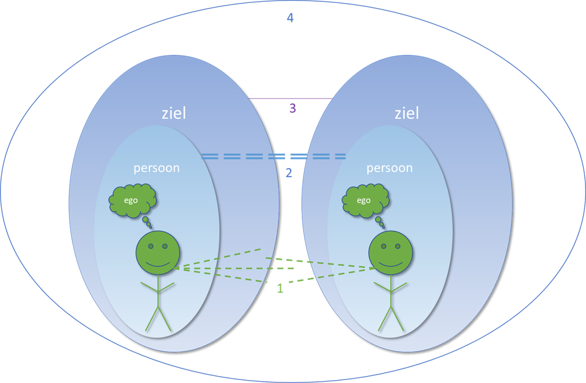
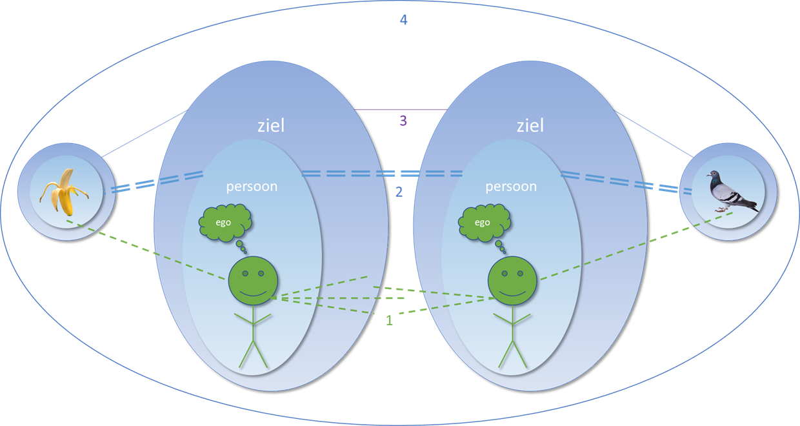

De banaan en de duif
Augustus 2019
Je doet aan yoga en meditatie, langzaam vallen de puzzelstukjes op hun plaats. Yoga is meer dan alleen houdingen, één van de dingen die ontstaat door beoefening van yoga en meditatie is inzicht in jezelf. Als je jezelf aan het ontdekken bent, dan kom je er achter dat je je met meerdere 'zelven' kunt gaan identificeren. Zoals eerder beschreven is het een kwestie van bewustzijn. Naarmate je meer energie ervaart en je bewustzijn groter wordt kun je je identificeren met
- het ego
- de persoon
- de ziel
- het allesomvattende
Communicatie met jezelf
Aan de hand van de communicatie mogelijkheden van deze 'zelven' gaan we ze proberen te omschrijven. In onderstaande figuur zetten we twee 'zelven' tegenover elkaar: jij en ik (of jij en jij en ik en ik, om het even in perspectief te houden)

1) Het ego is het groene poppetje. Dat is degene die 'denkt', op basis van dat denken handelt vervolgens het lichaam. Ego's communiceren gewoonlijk met elkaar via spraak, maar ieder zintuig is hier van toepassing. Het betreft het zintuiglijk contact tussen twee zelven. Ego's zien elkaar als afgescheiden van elkaar, daarom hebben we het dan over jij en ik, in de vorm van een lichaam.
2) De persoon is het lichtblauwe vlak, dat het ego omvat. De persoon 'voelt' de aanwezigheid van een ander persoon. Hier wordt niet de tast bedoelt, dat is een zintuig. Maar het betreft het aanvoelen van de energie van iemand. Je kent het wel, er loopt iemand de kamer in en je moet even kijken. Je voelt een aanwezigheid. Dat kan je een prettig of een ongemakkelijk gevoel geven. In beide gevallen is er een uitwisseling van energie tussen jou en de persoon ontstaan, die je informatie geeft over de persoon. Als je die energie goed kan 'lezen', dan weet je al heel goed met wie je te maken hebt. Vaak heb je aan een eerste indruk van iemand genoeg, dat is dit. We hebben het nog steeds over jij en ik, maar dan in de vorm van energie.
3) De ziel is het donkerblauwe vlak. Die omvat de persoon en het ego. De ziel is. Voor het gemak noemen we de ziel: bewustzijn. De ziel is zich volledig bewust van zichzelf en van zijn omgeving. De ziel weet hoe hij functioneert (als persoon en ego). Omdat de ziel ook in contact staat met het allesomvattende weet hij ook hoe zijn omgeving werkt. Het allesomvattende fluistert de ziel in wat er gebeurd en wat er gaat gebeuren. Dit gaat niet meer om een 'gevoel', zoals bij de persoon, maar om 'ingeving', de intuïtie. Ook dit heb je wel meegemaakt, het zijn van die momenten dat je intuïtief weet dat je iets moet doen, of juist niet. Je kunt zo'n aha moment hebben onder de douche of tijdens het sporten. Je bent je direct bewust van iets. Daarna hoef je er eigenlijk ook niet meer over na te denken (en snap je ook niet meer waarom je er überhaupt al zoveel over na had gedacht). Je ziel is zich bewust van zichzelf en zijn omgeving, toch ziet hij zich nog afgescheiden van zijn omgeving, er lijken meerdere zielen te zijn. Daarom noemt men dit ook wel de 'kleine' ziel.
4) Dan is er nog een allesomvattend canvas waarop de individuele zielen zich afbeelden. Deze is gesymboliseerd door de cirkel, waarin de twee zielen zijn getekend, maar in werkelijkheid kent dit geen grenzen. Je kunt dit de 'grote' ziel noemen, of de leegte, waarin alles ontstaat en weer vergaat. Hier is alles één. Jij bent die ene, ik ook. Daarom is er geen sprake van afgescheidenheid. Er is geen jij of ik. Er valt dus ook niet te communiceren met jezelf of met een ander, want je bent het zelf. Dat is één zijn. Maar let op, je kunt het niet ervaren, er is niets.
Hoe zit het nu met de banaan en de duif?
Die maken onderdeel uit van hetzelfde geheel. Je bent ook één met hen! Hoe communiceer je met hen? Begrijp je hun bestaan?

Ook met de banaan en duif kun je op 4 niveaus communiceren.
- Zintuiglijke waarneming krijg je door de banaan te eten en de duif te zien vliegen.
- Energetische overdracht is er ook, nadat je een banaan eet kun je weer activiteiten uitvoeren, 'krijg je weer energie'.
De aanwezigheid van de duif kun je voelen, daarvoor hoef je hem niet te zien. - Soms heb je echt 'zin' in een banaan, dan heb je het gevoel dat je er eentje moet eten. Je weet dat je die banaan nodig hebt om de juiste energie te krijgen. Dan geeft je ziel aan dat je dit nodig hebt. Let op, dit is subtiel anders dan dat je 'zin' hebt vanuit je zintuigen, vanuit een verslaving, zin in suikers of alcohol bijvoorbeeld is moeilijk te onderscheiden, want het lijkt zo nodig. Het verschil zit hem in het 'weten' of denken. Bij suikers en alcohol denk je dat het nodig is, je hebt het beredeneerd, 'ik wil die suiker omdat...'.
Je kunt je ook direct bewust zijn van een duif. Op het moment dat jij je bewust bent van je ziel, je bent in stilte of in contemplatie, dan voelt die duif dat, net zoals je dat kunt hebben met een kat of een hond. Dat is het moment waarop ze naar je toe willen komen, dan zitten jullie in dezelfde toestand en begrijp je elkaar. - De banaan en duif zijn net als jij onderdeel van het ene leven, van hetzelfde bestaan, met hetzelfde bestaansrecht. Zij zijn niet wezenlijk anders dan jij.
Probeer andere wezens eens op dezelfde manier te bekijken als jezelf! En dan gaat het dus niet alleen over andere mensen, maar ook over bijvoorbeeld bananen en duiven.

En nu...
Nieuwsgierig geworden? Neem contact met ons op. Je bent welkom in het bamboehuis. Aristoteles zei het al: "Vriendschap is een enkele ziel in twee lichamen." Een mooie tekst, maar hoe mooi zou het zijn om dat te ervaren!
Lees meer BOE blogs
Neem contact op
Ga naar www.bamboehuis.amsterdam